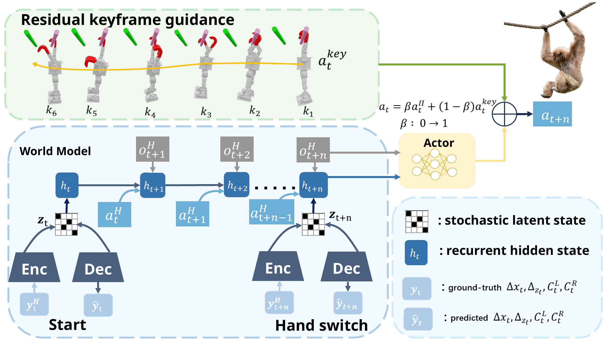

Brachiation enables primates to move across overhead supports when ground paths are blocked. Bringing this capability to high-DoF humanoid robots is difficult because the controller must discover a long-horizon release-swing-capture sequence, coordinate alternating contacts with whole-body momentum, and act without reliable measurements of segment-relative displacement or hook-contact state.
We present SwingBot, a learning framework for continuous humanoid brachiation with passive wrist hooks. Biomimetic keyframes make rare transitions reachable during early exploration, while recurrent privileged-state estimation provides compact position and contact latents for deployment. Hardware experiments demonstrate continuous bar traversal and robustness to payload, external disturbances and different bar spacings.

@article{xiong2026swingbot,
title={SwingBot: Learning Whole-Body Brachiation for Humanoid Robots},
author={Yujie Xiong and Peng Zhai and Taixian Hou and Quancheng Qian and Cunwang Liu and Kangmai Hu and Long Yang and Zhiyan Dong and Lihua Zhang},
journal={arXiv preprint arXiv:2609.10283},
year={2026},
eprint={2609.10283},
archivePrefix={arXiv},
primaryClass={cs.RO},
url={https://arxiv.org/abs/2609.10283}
}